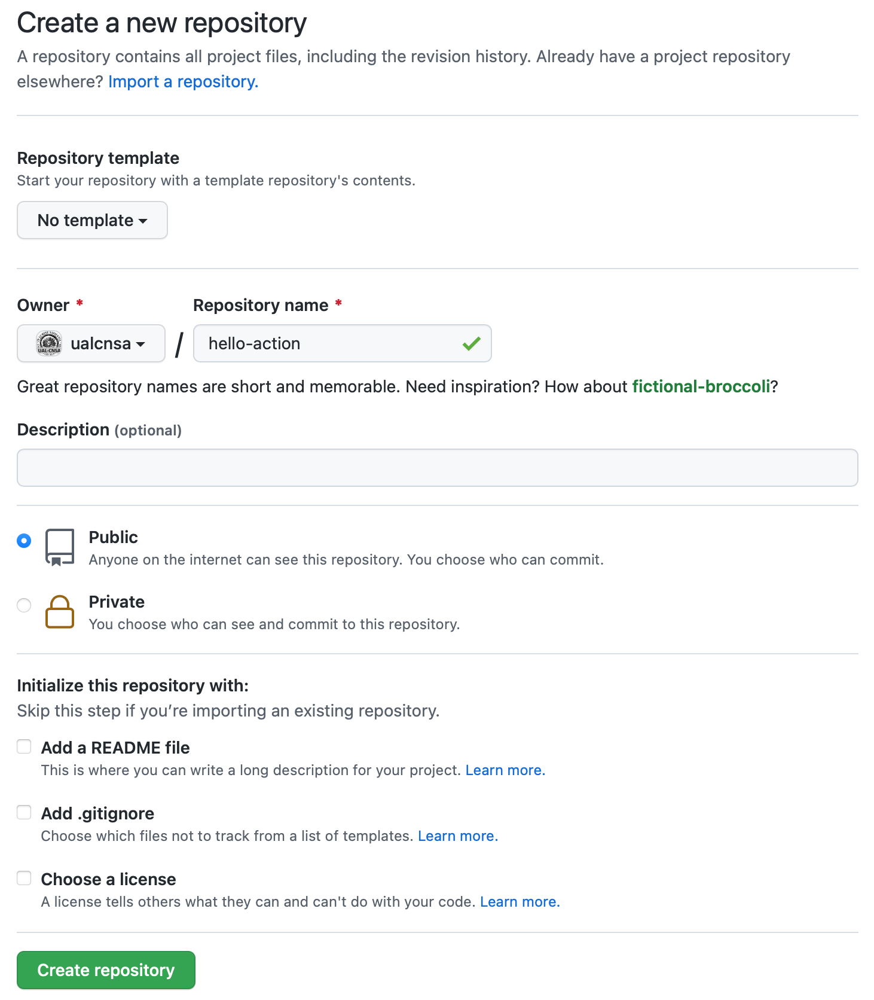

Computación en la Nube, Servicios y Aplicaciones. Joaquín Cañadas <jjcanada@ual.es>, Francisco García <paco.garcia@ual.es>
Version 0.22.2
-
Crear una infraestructura de CI/CD en GitHub mediante el uso de GitHub Actions
-
Diseñar flujos de trabajo para la construcción y despliegue automatizado de portales de documentación y aplicaciones NodeJs
Esta es la versión 0.22.2 de este documento.
Primeros pasos con GitHub Actions
-
Vamos a crear un repositorio vacio donde crear nuestro primer flujo de trabajo con GitHub Actions.
-
Después, con el repositorio con la documentación de la asignatura crearemos los primeros ejemplos de GitHub Actions que nos permitirán crear artefactos y desplegar la documentación en HTML en GitHub Pages.
Comenzando con GitHub Actions
-
Comenzar a crear flujos de trabajo (workflows) de GitHub Actions.
-
Probar un flujo de trabajo sencillo para familiarizarse con la plataforma.
Introducción a GitHub Actions
GitHub Actions es una plataforma de integración continua y despliegue continuo (CI/CD) que permite crear flujos de construcción, test y despliegue en GitHub. Estos flujos de trabajo permiten crear y probar cada solicitud de cambios en tu repositorio o desplegar solicitudes de cambios fusionadas a producción.
Sus principales características son:
-
Permite automatizar los flujos de trabajo proporcionando capacidades de CI/CD a GitHub.
-
Construye, prueba y despliega tu código directamente desde GitHub.
-
Permite integrar las revisiones de código, manejo de ramas, resolución de incidencias y creación de releases.
-
Permite descubrir, crear y compartir
actionspara ejecutar cualquier trabajo que quieras.
Creación del repositorio
Para empezar a trabajar con GitHub Actions solo necesitas un repositorio alojado en GitHub.
Para ello seguimos los siguientes pasos:
-
Al lado de nuestro avatar de usuario, pulsamos en
+ > New Repository
-
Creamos un repositorio llamado
hello-actionde tipo público.
|
Las GitHub Actions funcionan tanto con repositorios públicos como privados. Sin embargo, otras funciones como las GitHub Pages solo funcionan con los repositorios públicos. |
Creando tu primer workflow
A continuación, vamos a añadir un workflow que muestra las características esenciales de GitHub Actions.
Este ejemplo muestra como los trabajos de GitHub Actions pueden ser ejecutados automáticamente, donde corren y como interactuan con el código de tu repositorio.
-
Clona en tu equipo el repositorio creado anteriormente.
-
Crea un directorio
.github/workflows. -
En este directorio, crea un fichero llamado
github-actions-demo.yml. -
Copia el siguiente contenido YAML en el fichero anterior.
github-actions-demo.ymlname: GitHub Actions Demo (1) on: [push] (2) jobs: Explore-GitHub-Actions: (3) runs-on: ubuntu-latest (4) steps: - run: echo "üéâ The job was automatically triggered by a ${{ github.event_name }} event." (5) - run: echo "üêß This job is now running on a ${{ runner.os }} server hosted by GitHub!" - run: echo "üîé The name of your branch is ${{ github.ref }} and your repository is ${{ github.repository }}." - name: Check out repository code (6) uses: actions/checkout@v2 (7) - run: echo "üí° The ${{ github.repository }} repository has been cloned to the runner." - run: echo "üñ•Ô∏è The workflow is now ready to test your code on the runner." - name: List files in the repository run: | ls ${{ github.workspace }} - run: echo "üçè This job's status is ${{ job.status }}."1 Nombre del workflow. 2 Cuando se ejecuta el workflow. En este caso al hacer push en cualquier rama. 3 Nombre del trabajo. 4 Máquina donde se ejecuta el trabajo. 5 Comando de terminal bash. 6 Nombre del paso. 7 Reutilizaci√≥n de un actioncreada por otro usuario. En este caso es la que se utiliza para obtener el c√≥digo del repositorio. -
Hacemos
commitde los cambios y hacemospusha la rama remotagit commit -a git push origin main
Comprobando el resultado
|
Es posible que la GitHub Actions no se ejecute instantaneamente y tarde un poco en aparecer. Los recursos son compartidos entre todos los usuarios de GitHub. |
-
En la página principal del repositorio, selecciona
Actionsen el menú principal
-
En esta página podemos ver tanto el listado de workflows que tenemos en nuestro repositorio, como las ejecuciones de cada uno. Además podemos ver si ha habido éxito en la ejecución del workflow.

-
Pulsamos en el nombre del commit (
hello actionen la imagen anterior) y accederemos a un resumen de la ejecución. En esta suelen aparecer las estadísticas de tiempo, los artefactos asociados y cada uno de los trabajos o jobs de nuestro workflow.
-
Pulsamos en el nombre del trabajo (
Explore-GitHub-Actionsen la imagen anterior) y vemos una descripción de cada una de los pasos o steps del trabajo.
-
Además podemos ver el log de ejecución de cada uno de los pasos.
Primer ejemplo: Documentación en Antora
Creación del primer proyecto freestyle
Creamos el primer proyecto de Jenkins. Comprueba que Jenkins puede llamar a docker. Para ello crea un nuevo proyecto tipo freestyle.

En la sección Build, añade un bloque Execute shell. Pega estos comandos:
whoami
git --version
java -version
docker -vGuarda los cambios. Haz clic sobre Build now. Haz clic sobre la bolita verde para ver el la salida por consola.


Por consola se visualiza el resultado de ejecutar los comandos dentro del contenedor. Como puedes ver, git y java están instalados, venían ya en la imagen de jenkins:lts de la que hemos partido en la definición del Dockerfile. Además, docker también está disponible, se ha instalado correctamente mediante la definición incluida en el Dockerfile.
Creación del primer pipeline
Pipeline sobre el nodo master
Creamos el primer proyecto de Jenkins tipo pipeline. Vamos a darle el nombre hello-maven-pipeline-on-master-node. Este pipeline se ejecutará sobre el nodo (agent) master, es decir, sobre el mismo contenedor que está ejecutando Jenkins.
Copia la siguiente definición de pipeline en el bloque Pipeline, Pipeline script.
pipeline {
agent any
tools {
maven 'Default Maven' (1)
}
stages {
stage('Build') {
steps {
sh '''
java -version
mvn -v
''' (2)
}
}
}
}| 1 | Utiliza la instalación de Maven que hemos hecho en la sección anterior, y le dimos el nombre Default Maven. |
| 2 | En la shell ejecutará los comandos para mostrar las versiones de Java y Maven. |
Haz clic sobre Build now, y visualiza la consola. Como parte de la salida, se debe visualizar algo así (puede que los números de versiones varíen):
[Pipeline] sh
+ java -version
openjdk version "11.0.14" 2022-01-18
OpenJDK Runtime Environment Temurin-11.0.14+9 (build 11.0.14+9)
OpenJDK 64-Bit Server VM Temurin-11.0.14+9 (build 11.0.14+9, mixed mode)
+ mvn -v
Apache Maven 3.8.4 (9b656c72d54e5bacbed989b64718c159fe39b537)
Maven home: /var/jenkins_home/tools/hudson.tasks.Maven_MavenInstallation/Default_Maven
Java version: 11.0.14, vendor: Eclipse Adoptium, runtime: /opt/java/openjdk
Default locale: en, platform encoding: UTF-8
OS name: "linux", version: "5.11.0-1029-gcp", arch: "amd64", family: "unix"|
Lanzar las construcciones de proyectos en el nodo máster puede acarrear problemas de seguridad. De hecho, Jenkins avisa de que esta configuración es inadecuada, y recomienda configurar agentes independientes donde lanzar las ejecuciones de los proyectos. 
Fig. 4. Aviso de evitar ejecuciones en el nodo máster de Jenkins
|
Pipeline con un contenedor como agente
Otra alternativa es que el pipeline se ejecute, en lugar de en el nodo master, en un nodo tipo "agente" que se creará ex profeso a partir de un contenedor Docker disponible de DockerHub.
A continuación creamos el segundo proyecto de Jenkins tipo pipeline. Vamos a darle el nombre hello-maven-pipeline-on-container-node
pipeline {
agent {
docker {
image 'maven:3.6-openjdk-8' (1)
args '-v $HOME/.m2:/root/.m2'
}
}
stages {
stage('Build') {
steps {
sh '''
java -version
mvn -v
'''
}
}
}
}| 1 | Entre las imágenes de Maven disponibles están 3.6-openjdk-11, 3.6-openjdk-15, etc |
Te dará error. En la máquina Jenkins, sobre el S.O. host, hay que abrir permisos en el socket de Docker para que desde dentro del contenedor Jenkins permita crear otros contenedores hermanos. Para ello modifica los permisos así:
sudo chmod 666 /var/run/docker.sockTras ello deben construirse correctamente. Sin embargo, abrir permisos a ese archivo supone ciertos problemas de seguridad: Avoid workarounds like this which could be a big potential security threat. The result of your chmod practically gives all local users read and write permissions to the docker-socket which allows anyone to interfere with your docker images. (fuente).
|
Para que tras reiniciar la máquina se mantengan los permisos del socket de Docker: Crea el archivo Por último, dale los permisos adecuados al archivo Tras ello reinicia la máquina. Al volver a entrar, comprueba que el socket de Docker tiene los permisos adecuados: |
Otros ejemplos similares con contenedores NodeJS están disponibles en la documentación de Jenkins
Usando varios contenedores como agente
Es habitual tener varias tecnologías en un mismo proyecto. Por ejemplo, un repositorio puede tener tanto un back-end basado en Java como un front-end basado en JavaScript. Combinar Docker y Pipeline permite usar diferentes agentes en diferentes fases (stages) del pipeline:
pipeline {
agent none
stages {
stage('Back-end') {
agent {
docker { image 'maven:3.8.1-adoptopenjdk-11' }
}
steps {
sh 'mvn --version'
}
}
stage('Front-end') {
agent {
docker { image 'node:16.13.1-alpine' }
}
steps {
sh 'node --version'
}
}
}
}Conexión con la máquina de despliegue
Para automatizar el despliegue sobre la instancia que tenemos creada para ello, deberás permitir que Jenkins ejecute comandos sobre la máquina de despliegue a través de SSH. Para ello, la instancia Jenkins debe poder conectarse a la instancia de despliegue mediante una conexión SSH basada en autenticación por pareja de claves pública/privada, que ha demostrado ser más seguro sobre la autenticación estándar de nombre de usuario/contraseña.

Para ello, los pasos que se detallan a continuación permiten:
-
generar una nueva pareja de claves que usaremos para el despliegue,
-
copiar la clave pública generada en la instancia de despliegue,
-
y por último probar que la conexión se realiza correctamente.
Ejecuta los siguientes pasos:
Generar la nueva pareja de claves de despliegue
-
Conecta por SSH a la máquina Jenkins:
ssh ubuntu@instancia-jenkins

-
Crea la carpeta donde se va a guardar la nueva pareja de claves:
mkdir /home/ubuntu/jenkins_home/.ssh -
Crea una pareja de claves ssh de despliegue:
ssh-keygen -t rsa -b 4096 -
Cuando pida el nombre, escribe el nuevo nombre id_rsa_deploy junto con la ubicación donde Jenkins va a buscar las claves de forma predeterminada, que es:
/home/ubuntu/jenkins_home/.ssh/id_rsa_deploy -
Por último, deja la contraseña en blanco (pulsa ENTER):
Enter passphrase (empty for no passphrase):
Esto crea la clave privada en /home/ubuntu/jenkins_home/.ssh/id_dsa_deploy y una clave pública asociada en /home/ubuntu/jenkins_home/.ssh/id_dsa_deploy.pub. Esta nueva pareja de claves la usaremos exclusivamente para el despliegue de nuestros proyectos. Al haberlos guardado en la carpeta /home/ubuntu/jenkins_home/ los archivos están accesibles dentro del contenedor, porque recuerda que esa carpeta la habíamos mapeado con la carpeta /var/jenkins_home del contenedor.

Copiar la clave pública a la instancia de despliegue
-
Muestra el contenido de la clave pública:
cat /home/ubuntu/jenkins_home/.ssh/id_rsa_deploy.pub -
Copia el contenido: con el ratón, selecciona el contenido de la clave, desde “ssh-rsa” hasta el final, y pulsa ENTER (o CTRC+C)

|
Debido a que algunos terminales añaden saltos delinea al copiar texto desde el terminal, como ocurre con cloud shell de GCP, es recomendable copiar el contenido de la clave pública en cualquier editor de texto "plano" (Notepad++, Sublime, VS Code, etc) y eliminar los saltos de línea, si los hubiera. |
-
Ahora pégalo en tu PC, lo necesitaremos más adelante.
-
Desconecta de la máquina Jenkins:
exit -
Conecta por ssh a la instancia de despliegue

-
Edita el archivo
authorized_keys:nano home/ubuntu/.ssh/authorized_keys -
Ese archivo ya tenía una clave pública, la correspondiente a tu pareja de claves personal que inyectamos en la creación de la instancia con Terraform (por eso has podido conectar por ssh a esa máquina). Pega el contenido de la clave pública de despliegue. Ahora debe tener 2 claves públicas.
-
Ya puedes desconectar de la instancia de despliegue.
Prueba de la conexión desde jenkins a despliegue
Vamos a probar que funciona:

-
Conecta de nuevo a la instancia jenkins y prueba la conexión ssh a la instancia de despliegue. Recuerda que puesto que Jenkins se está ejecutando como un contenedor, debes probar la conexión ssh desde dentro del contenedor:
docker exec -it jenkins-docker ssh ubuntu@instancia_deploy -i /var/jenkins_home/.ssh/id_rsa_deployEn el comando anterior:
-
docker exec -itindica ejecutar un comando desde dentro del contenedor -
jenkins-dockeres el nombre del contenedor -
ssh ubuntu@instancia_deploy -i /var/jenkins_home/.ssh/id_rsa_deployes el comando a ejecutar en el contenedor. En este caso,sshcon el parámetro-i …para indica la clave privada que debe usar para conectar. -
Recuerda que
/var/jenkins_homees la carpeta HOME del usuario jenkins dentro del contenedor, y jenkins es el usuario del contenedor que ejecuta Jenkins.
-
La primera vez que realizas una conexión ssh desde un usuario en una máquina origen a una destino, te pregunta si deseas almacenar la clave de host de destino en la lista de hosts conocidos (
known_hosts) de tu máquina origen. Contesta:yes

-
Si todo ha ido bien, la conexión se ha debido realizar. Sal con
exit. Si no ha sido así, verifica que la ruta al archivo de la clave privada es correcta, y que el nombre de la máquina de despliegue es correcto. -
Comprueba que la clave de host de la máquina de destino (despliegue) se ha guardado en la máquina origen (jenkins) en el archivo
~/.ssh/known_hostsdel usuario que ha ejecutado el comando ssh, en nuestro caso, del usuario jenkins de contenedor:docker exec -it jenkins-docker cat /var/jenkins_home/.ssh/known_hosts

-
Puedes comprobar también el contenido de known_hosts en el archivo
/home/ubuntu/jenkins_home/.ssh/known_hosts, ya que recuerda que hay un volumen mapeado entre la carpeta local/home/ubuntu/jenkins_homey la carpeta del contenedor/var/jenkins_home.

-
Ahora que la conexión por SSH entre la máquina Jenkins y la máquina de despliegue es correcta, vamos a hacer que Jenkins automatice la ejecución de comandos sobre la máquina de despliegue: entra en Jenkins y añade el siguiente comando al proyecto hello_docker existente, sustituyendo MAQUINA_DEPLOY por el nombre DNS de la máquina de despliegue.
ssh -i ~/.ssh/id_rsa_deploy ubuntu@MAQUINA_DEPLOY "pwd && ls -la"Como aclaración de este comando:
-
el parámetro
-iindica la clave privada que queremos usar en la conexión ssh -
"pwd && ls -la"son comandos básicos que ejecuta sobre la máquina remota. Hemos indicado estos comandos simplemente para probar que la conexión se realiza correctamente.

Tras ejecutar el proyecto en Jenkins, el resultado debe ser correcto.

Aplicación en Node.js
Como construir y desplegar apliaciones web Node.js con Jenkins
-
Dockerizar la aplicacion Node.js para facilitar su despliegue
-
Desplegar la aplicación Node.js tanto de forma nativa como mediante contenedor
-
Definir un pipeline para automatizar las etapas más habituales en CI/CD
Hola mundo en Node.js
A continuación se muestra un ejemplo de integración y despliegue continuos en Jenkins de un proyecto NodeJs. Los pasos a realizar son similares al ejemplo anterior con Java, el decir, el pipeline tendrá las mismas fases; eso si, adaptaremos las ordenes o comandos a ejecutar a la tecnología Node.js.
Al igual con el ejemplo anterior en Java, en primer lugar trabajaremos con la aplicación Node.js sin dockerizar, y después dockerizaremos la aplicación. La mayoría de los pasos siempre los ejecutaremos primero en local, y tras comprobar que funcionan correctamente, los automatizaremos en Jenkins.
Construcción y ejecución en local
Nos vamos a basar en el proyecto HelloWorld en NodeJs, disponible en https://github.com/ualcnsa/nodeapp. Necesitarás poder hacer cambios sobre el mismo, así que crea un fork y trabaja con tu fork a partir de ahora.
Tras clonar tu fork a local, haz checkout del tag v0.1 en una nueva rama cuyo nombre sea tu usuario de la UAL, para que tus archivos estén en el estado inicial de este tutorial:
git checkout tags/v0.1 -b <branch> (1)
| 1 | Usa tu nombre de usuario de la UAL como nombre de la rama. |
Veamos los archivos que componen la aplicación:
-
El archivo
package.jsoncontienen información básica de la aplicación y las dependencias:-
express: Node framework
-
jest: framework de testing para NodeJs (existen numerosos framework de testing en NodeJs, como Jasmine, Mocha, Tape, etc.)
-
supertest: proporciona abstracción a alto nivel para testing HTTP
-
{
"name": "nodeapp",
"version": "1.0.0",
"description": "",
"main": "src/main.js",
"scripts": {
"start": "node src/main",
"test": "jest"
},
"author": "",
"license": "ISC",
"dependencies": {
"express": "^4.17.3"
},
"devDependencies": {
"jest": "^27.5.1",
"supertest": "^6.2.2"
}
}|
Comprueba que los archivos 
Fig. 16. Archivos y carpetas en el estado inicial
|
Para instalar las dependencias ejecuta npm install.
-
El archivo principal del proyecto
src/main.jsse encarga de arrancar la aplicación en el puerto 3000.
const app = require("./app");
const port = 3000
app.listen(port, () => {
console.log(`Example app listening on port ${port}`)
})-
El archivo
src/app.jses un sencillo hola mundo con dos rutas:-
/devuelve"Hello World!" -
/:nameToSalutedevuelve"Hello " + nameToSalute + "!"mediante el servicioHelloWordService
-
const express = require('express')
const HelloWordService = require( "./services/hello-world" );
const app = express()
app.get('/', (req, res) => {
res.send('Hello World!')
})
app.get('/:nameToSalute', (req, res) => {
res.send(new HelloWordService().greet(req.params.nameToSalute));
})
module.exports = app-
El archivo
src/services/hello-world.jses un servicio de hola mundo.
class HelloWordService {
/**
* @description Create an instance of HelloWordService
*/
constructor () {
}
/**
* @description Says Hello to a given name
* @param nameToHello {string} Name to greet
* greet name
* @returns a string that starts with Hello
*/
greet ( nameToHello ) {
return "Hello " + nameToHello+"!";
}
}
module.exports = HelloWordService;Para ejecutar la aplicación, ejecuta: npm start
Puedes ver la aplicación en el navegador accediendo a http://localhost:3000 o a http://localhost:3000/nombre
Test unitarios y end2end
En primer lugar tenemos un test unitario para probar el servicio HelloWorldService que comprueba que la salida sea la esperada.
Se guardará en la carpeta src/services/ con el nombre hello-world.test.js.
const HelloWordService = require("./hello-world");
describe("HelloWordService Test", () => {
const helloWordService = new HelloWordService();
it("says 'Hello John!' to greet John", () => {
expect(helloWordService.greet("John")).toBe("Hello John!");
});
});En segundo lugar tenemos varios test end2end. El primer test va a navegar a la raiz de la aplicación (/) y verificar que la página responde con el texto esperado Hello World!. El segundo test navega a /John y comprueba que la página responde con Hello John!.
const request = require("supertest");
const app = require("./app");
describe("GET /", () => {
//navigate to root and check the the response is "Hello World!"
it('responds with "Hello World!"', (done) => {
request(app).get('/').expect('Hello World!', done);
});
});
describe("GET /John", () => {
//navigate to /John and check the the response is "Hello John!"
it('responds with "Hello John!"', (done) => {
request(app).get('/John').expect('Hello John!', done);
});
});Para ejecutar los tests: npm test
Si todo funciona correctamenente, haz commit y push de tu rama.
Creación del pipeline en Jenkins
Definimos un nuevo proyecto tipo Pipeline. Añadimos la descripción del pipeline:
pipeline {
agent any
tools {
// In Global tools configuration, install Node configured as "nodejs"
nodejs "nodejs"
}
stages {
stage('Cloning Git') {
steps {
git branch: 'MI_RAMA', url: 'https://github.com/MI_USUARIO/nodeapp' (1)
}
}
stage('Install dependencies') {
steps {
sh 'npm install'
}
}
stage('Test') {
steps {
sh 'npm test'
}
}
}
}| 1 | Cambia el nombre de la rama y la URL del repositorio por las tuyas. |
El resultado sera:

La evolución de las métricas del proyecto es uno de los indicadores que habitualmente muestra Jenkins como feedback para los desarrolladores. Vamos a publicar los resultados de los test en un gráfico.
-
Editamos
package.jsony añadimos el scripttest-jenkinspara generar los resultados de los test en formato xml que usará Jenkins para generar el gráfico, y la dependencia necesaria para ello:
...
"scripts": {
"start": "node src/main",
"test": "jest",
"test-jenkins": "jest --reporters=default --reporters=jest-junit", (1)
},
"jest-junit": { (2)
"outputDirectory": "./coverage/",
"outputName": "test.results.xml",
"usePathForSuiteName": "true"
},
...
"devDependencies": {
"jest": "^27.5.1",
"jest-junit": "^13.0.0", (3)
"supertest": "^6.2.2"
}| 1 | Añadimos el script test-jenkins que define los formatos de salida de los test: el normal y usando el plugin jest-junit para formato xml. |
| 2 | Configuración para jest-junit que genera los resultados de los test en el archivo ./coverage/test.results.xml |
| 3 | Dependencia a jest-junit que permite generar los resultados de los test en xml. |
Podemos probar en local, llamamos a la ejecución de los test y generación del xml: npm run test-jenkins.
|
Añade al |
Guarda los cambios en el repositorio, para que estén actualizados cuando los lea Jenkins.
-
Actualizamos el pipeline, la fase
Test:
stage('Test') {
steps {
sh 'npm run test-jenkins'
}
post {
success {
junit '**/test*.xml'
}
}
}Guardamos los cambios. Tras un par de ejecuciones del build, se visualiza el gráfico Test Result Trend:
Webhook para construcción automática
Configura en GitHub un nuevo Webhook para que tras cada cambio de código en el repositorio, Jenkins sea notificado y lance automáticamente la construcción del pipeline:
-
En GitHub, seleccionamos el repositorio sobre el que queremos activar la construcción en Jenkins y hacemos clic en: Settings > WebHooks > Add webhook
-
En Payload URL:
http://{YOUR_JENKINS_URL}/github-webhook/

-
Finalmente, en la configuración del proyecto en Jenkins, en la sección Build Trigers, marca la opción GitHub hook tirigger from GITScm polling

A partir de ahora, cuando el repositorio en GitHub reciba un push notificará a Jenkins para que lance la construcción automáticamente.
Informe de cobertura
Como ya sabemos, la cobertura de código nos va a ofrecer un valor directamente relacionado con la calidad de los juegos de prueba. Para obtener la cobertura y publicarla en Jenkins, debemos hacer:
-
Añadir a
package.jsonun script para cobertura que permite obtener la cobertura con Jest. -
Modificar la fase Test de Jenkins para que llame al script de cobertura y publique, en el bloque
post, el informe de cobertura generado.
1.Modifica package.json, añadiendo el nuevo script y la dependencia:
...
"scripts": {
...
"coverage-jenkins": "jest --reporters=default --reporters=jest-junit --coverage --coverageReporters=text --coverageReporters=html --coverageDirectory=./coverage/"
},
...Podemos probar en local, llamamos a la ejecución del script: npm run coverage-jenkins.
Como resultado, en la carpeta coverage del proyecto se ha generado el informe de cobertura.

-
Modifica el pipeline de Jenkins, la fase
Test:
stage('Test') {
steps {
sh 'npm run coverage-jenkins' (1)
}
post {
success {
junit '**/test*.xml'
publishHTML target: [ (2)
allowMissing : false,
alwaysLinkToLastBuild : false,
keepAll : true,
reportDir : './coverage/',
reportFiles : 'index.html',
reportName : 'Coverage Report'
]
}
}
}| 1 | Llama al nuevo script que calcula la cobertura |
| 2 | Publica el informe de cobertura |
|
Instala el HTML Publisher plugin en Jenkins |
El resultado en Jenkins, debe aparece un enlace nuevo en el menú de la izquierda:

-
Para poder visualizar correctamente el Coverage Report, hay que cambiar la configuración de seguridad de Jenkins predeterminada, que es muy restrictiva para prevenir de archivos HTML/JS maliciosos que podrían instalarse como parte de un Plugin. Para modificar la configuración, abre la consola de scritps (Manage Jenkins / Script Console), y ejecuta estas líneas:
System.setProperty("hudson.model.DirectoryBrowserSupport.CSP", "sandbox; default-src 'none'; img-src 'self'; style-src 'self' 'unsafe-inline'; ")
System.getProperty("hudson.model.DirectoryBrowserSupport.CSP")Tras ello ya podrás visualizar correctamente el informe de cobertura. Pero ten en cuenta que cada vez que reinicies Jenkins esta configuración se pierde y vuelve a la configuración predeterminada.
Análisis estático de código
El código JavaScript es dinámicamente tipado, por lo que en lugar de usar el compilador para realizar el análisis estático de código, como ocurre en lenguajes como Java, las formas más comunes de análisis estático en JavaScript son formatters y linters.
-
Formatters o formateadores, escanean y reformatean rápidamente los archivos de código. Uno de los más populares es Prettier, que como cualquier buen formateador, corregirá automaticamente las inconsistencias que encuentre.
-
Linters pueden trabajar en aspectos de formato pero también otros problemas más complejos. Se basan en una serie de reglas para escanear el código, o descripciones de comportamientos a vigilar, y muestran todas las violaciones que encuentran. El más popular para JavaScript es ESLint.
Vamos a probar ESLint.
-
Instala con npm:
npm install eslint eslint-config-prettier eslint-plugin-prettier --save-dev
-
A continuación, inicializa un archivo de configuración:
npx eslint --init
Y responde a las preguntas:

Se habrá creado un archivo .eslintrc.json, que incluirá esta línea:
{
"extends": "eslint:recommended" (1)
}| 1 | Habilita las reglas predeterminadas |
En lugar del anterior fichero, puedes utilizar un fichero .eslintrc.js como el siguiente, que contiene recomendaciones para express:
module.exports = {
env: {
es6: true,
node: true
},
extends: ['prettier'],
plugins: ['prettier'],
globals: {
Atomics: 'readonly',
SharedArrayBuffer: 'readonly'
},
parserOptions: {
ecmaVersion: 2018,
sourceType: 'module'
},
rules: {
'prettier/prettier': 'error',
'class-methods-use-this': 'off',
'no-param-reassign': 'off',
camelcase: 'off',
'no-unused-vars': ['error', { argsIgnorePattern: 'next' }]
}
};-
Añade a
package.jsonun script paralinty la dependencia a ESLint
"scripts": {
...
"lint": "eslint src/**/*.js -f checkstyle -o coverage/eslint-result.xml"
},
...
"devDependencies": {
...
"eslint": "^8.10.0",
"eslint-config-prettier": "^8.5.0",
"eslint-plugin-prettier": "^4.0.0",
"prettier": "^2.5.1",
}
...-
Lánzalo en local:
npm run lint -s
El parámetro -s se utiliza para que no muestre mensajes de error. Habrá generado el archivo coverage/eslint-result.xml en formato similar al informe de CheckStyle para poder importarlo correctamente en Jenkins.
-
En Jenkins, añade una nueva fase
Analysisen el pipeline, en la que llames alinty publiques el informe generado por ESLint con el formato CheckStyle.
stage('Analysis'){
steps{
sh 'npm run lint -s'
}
post {
always{
// record lint issues found, also, fail the build if there are ANY NEW issues found
recordIssues enabledForFailure: true,
blameDisabled: true,
tools: [esLint(pattern: '**/eslint-result.xml')],
qualityGates: [[threshold: 1, type: 'NEW']]
}
}
}-
El enlace al informe de ESLint no aparece en la página principal del proyecto, en el menú de enlaces, sino que tienes que hacer clic en el número del último build, y en la nueva página ya aparece el enlace:

-
No te preocupes si la fase de análisis que acabas de añadir falla (está en rojo). Es así porque cuando ESLint detecta un error, finaliza con error (
EXIT 1). Si te fijas en el informe, los 2 errores detectados han sido en el archivotest.js(y pueden ser falsos positivos). Para evitarlo, eliminatest/*.jsdel scriptlintenpackage.json.
Tras ello, la nueva ejecución del pipeline se ejecutará correctamente.
Despliegue en la VM
Para desplegar la aplicación hello world en la instancia de despliegue vamos a clonar el repositorio y a continuación ejecutaremos en ella la orden de Node para ponerla en marcha.
Recuerda que ya he hemos realizado una configuración previa sobre la instancia de despliegue, que constituyen los prerrequisitos para esta sección:
-
Con anterioridad ya instalamos NodeJS en la instancia de despliegue.
-
También habíamos copiado la clave pública de despliegue para que Jenkins, que tiene la clave privada asociada, pueda hacer
sshy ejecutar comandos sobre ella. -
Como requisito adicional, para ayudarnos a lanzar
npm startdesde Jenkins, como un proceso demonio en background, usaremos forever. Debes instalarforeveren la instancia de despliegue:sudo npm install forever -g
Una vez revisados los prerrequisitos, añade la fase de despliegue al pipeline en Jenkins:
-
Copia este nueva fase en tu pipeline, sustituyendo DEPLOY_MACHINE por el nombre DNS de tu instancia, y usa el nombre del repositorio git adecuado:
stage('Deploy'){
steps {
sh '''
ssh -i ~/.ssh/id_rsa_deploy ubuntu@DEPLOY_MACHINE "if [ ! -d 'nodeapp' ] ; then
git clone https://github.com/ualcnsa/nodeapp.git
else
cd nodeapp
git pull origin master
fi" (1)
ssh -i ~/.ssh/id_rsa_deploy ubuntu@DEPLOY_MACHINE "if pgrep node; then forever stopall; fi" (2)
ssh -i ~/.ssh/id_rsa_deploy ubuntu@DEPLOY_MACHINE "cd nodeapp && npm install" (3)
ssh -i ~/.ssh/id_rsa_deploy ubuntu@DEPLOY_MACHINE "cd nodeapp && PORT=8080 forever start index.js" (4)
'''
}
}| 1 | Clona el repositorio si no existe en la máquina de despliegue, si existe hace un pull |
| 2 | Detiene la ejecución de forever si existe de un despliegue anterior, usando forever stop. |
| 3 | Instala las dependencias |
| 4 | Ejecuta la aplicación con forever start en el puerto 8080, que ejecuta el proceso en background como demonio. |
Hola mundo en Node.js con Docker
Para realizar el despliegue de la app Hola mundo en Node.js como un contenedor, primero tenemos que dockerizar la aplicación. Una vez construido el contenedor, habrá que publicar la imagen de contenedor en un registro como Google Container Registry, y por último ejecutar el contenedor en la instancia de despliegue.
A continuación se describe cómo crear un contenedor Docker de la aplicación Node.js. Los pasos se realizan en local, y al final configuraremos el pipeline de Jenkins para que se realicen automáticamente.
Creación del Dockerfile
Para crear el contendedor de Docker que empaquete la aplicación Node.js, vamos a definir el siguiente archivo Dockerfile que debe estar en la carpeta raíz del proyecto:
FROM node:10-alpine
# Create app directory
WORKDIR /usr/src/app
# Install app dependencies
# A wildcard is used to ensure both package.json AND package-lock.json are copied
# where available (npm@5+)
COPY package*.json ./
RUN npm install
# If you are building your code for production
# RUN npm ci --only=production
# Bundle app source
COPY . .
EXPOSE 3000
CMD [ "npm", "start" ]El Dockerfile es muy sencillo, contiene los pasos básicos para ejecutar una aplicación en un contenedor.
Crea además un archivo .dockerignore en la misma carpeta que tu Dockerfile con el siguiente contenido:
node_modules/ .git/ .gitignore npm-debug.log
-
Puedes construir la imagen del contenedor:
docker build -t <your username>/nodeapp .Tras ello, ejecuta: docker images. La imagen debe aparecer en la lista de imágenes de Docker en tu equipo:
Prueba la ejecución del contenedor en local:
docker run -p 3000:3000 -d --name hello-node <your username>/nodeappComprueba que se ha iniciado la aplicación en http://localhost:3000.
Publicación de la imagen en el registro
Una vez creada la imagen con docker build y probada su ejecución con docker run, el siguiente paso será publicar la imagen en un registro de contenedores, mediante docker push. De nuevo vamos a usar Google Cloud Container Registry.
Para poder hacer push debemos tener permisos de escritura, y por tanto debemos autenticarnos en el servicio Container Registry. Este proceso ya se hizo en la para el ejemplo de Java en la sección Autenticación en Container Registry. Ahora, simplemente comprueba que mantienes el login del Container Registry.
-
Comprueba el login al registro:
docker login https://gcr.io

|
Si En tal caso, no olvides añadir el archivo de credenciales al |
-
Etiqueta el contenedor con el nombre completo incluyendo la referencia a Container registry (gcr.io). Primero definimos una variable de entorno con el nombre de nuestro proyecto GCP, y luego etiquetamos la imagen ya construida con un nuevo nombre completo del registro de contenedores:
GOOGLE_CLOUD_PROJECT=cnsa-2022-user123
docker tag <your username>/nodeapp gcr.io/$GOOGLE_CLOUD_PROJECT/nodeapp:1.0-
Comprueba que se ha etiquetado correctamente

-
A continuación, publica la imagen en el registro con
docker push
docker push gcr.io/$GOOGLE_CLOUD_PROJECT/nodeapp:1.0-
Comprueba que se ha publicado correctamente.
La imagen del contenedor nodeapp ya está disponible en el registro privado de nuestro proyecto GCP. Utilizando nuestras credenciales podremos hacer docker pull de dicha imagen para descargarla en cualquier máquina con docker, y ejecutarlo con docker run.
docker run -p 3000:3000 -t --name nodeapp gcr.io/$GOOGLE_CLOUD_PROJECT/nodeapp:1.0Despliegue en VM
Conecta a la instancia de despliegue para ejecutar el contenedor. Antes vamos a comprobar el login al registro. En la máquina de despliegue ya habíamos copiado el archivo de credenciales .json con premisos sobre Container Registry. A continuación se recuerdan los comandos necesarios para ello.
# Conectamos a la máquina de despliegue
ssh ubuntu@DNS_MAQUINA_DEPLOY
# Autenticamos docker contra Container Registry
cat keyfile.json | docker login -u _json_key --password-stdin https://gcr.io
# ejecutamos el contenedor desde gcr.io
docker run -p 8080:3000 -t --name nodeapp gcr.io/$GOOGLE_CLOUD_PROJECT/nodeapp:1.0Hemos publicado el contenedor en el puerto 8080 ya que es el que está abierto en las reglas del firewall de nuestro proyecto GCP.
Es posible que la ejecución del contenedor de un error, porque el puerto 8080 ya esté en uso:
Error starting userland proxy: listen tcp 0.0.0.0:8080: bind: address already in use.Para solucionarlo, bien detén el proceso o contenedor java que está corriendo con la aplicación PetClinic del ejemplo anterior. O bien utiliza el puerto 80 que también está abierto.
Integración y despliegue continuos con Jenkins
A continuación, vamos a automatizar en Jenkins todo el proceso:
-
la construcción de la imagen del contenedor,
-
la publicación de la imagen en el registro, y
-
el despliegue del contenedor.
Los plugins de Jenkins necesarios ya los tenemos configurados el ejemplo en Java.
-
Definimos un nuevo proyecto en Jenkins de tipo pipeline, con el nombre
nodeapp-Docker-abc123
Comenzamos por la construcción de la imagen:
pipeline {
agent any
environment {
CONTAINER_REGISTRY = 'gcr.io'
GOOGLE_CLOUD_PROJECT = 'cnsa-2022'
CREDENTIALS_ID = 'cnsa-2022-gcr'
}
tools {
// In Global tools configuration, install Node configured as "nodejs"
nodejs "nodejs"
}
stages {
stage("Git Checkout") {
steps {
// checkout scm
git 'https://github.com/ualcnsa/nodeapp.git'
}
}
stage('Install dependencies') {
steps {
sh 'npm install'
}
}
stage('Test') {
steps {
sh 'npm run test-jenkins'
}
post {
success {
junit '**/test*.xml'
}
}
}
stage("Build image") {
steps {
script {
dockerImage = docker.build(
"${env.CONTAINER_REGISTRY}/${env.GOOGLE_CLOUD_PROJECT}/nodeapp:${env.BUILD_ID}",
"-f Dockerfile ."
)
}
}
}
}
}Para probar que la imagen del contenedor se ha creado bien, añade la siguiente fase que hace un despliegue "local" en la propia máquina de Jenkins, es decir, ejecuta un contenedor basado en la imagen que acabamos de crear:
stage("Run image locally") {
steps {
sh "docker stop nodeapp || true && docker rm nodeapp || true" (1)
sh "docker run -d -p 8080:3000 -t --name nodeapp ${env.CONTAINER_REGISTRY}/${env.GOOGLE_CLOUD_PROJECT}/nodeapp:${env.BUILD_ID}" (2)
}
}| 1 | Por si ya se ha ejecutado el pipeline anteriormente, es necesario comprobar si el contenedor nodeapp ya se está ejecutando, y en tal caso pararlo con docker stop y eliminarlo con docker rm |
| 2 | Con docker run ejecuta el contenedor nodeapp a partir de la imagen recién construida. Para que el pipeline pueda finalizar y el contenedor siga ejecutándose, se añade -d que indica modo detached que ejecuta el contenedor en background. |
Tras ello, la aplicación debe estar accesible en el puerto 8080 en tu máquina de Jenkins. Para asegurarnos que la aplicación se está ejecutando bien, debemos problarlo "manualmente". Para automatizar esta prueba, lo adecuado sería realizar unos tests end-to-end, con Selenium. Esto se explicará en otra actividad, dedicada al testing.
stage('End-to-end Test image') {
// Ideally, we would run some end-to-end tests against our running container.
steps{
sh 'echo "End-to-end Tests passed"'
}
}El siguiente paso es publicar la imagen en el registro.
-
Primero, las credenciales en Jenkins para poder hacer
pushen Container Registry ya están creadas del ejemplo anterior (Si tienes algún problema, consulta la sección correspondiente del ejemplo de Java)
-
Define la fase para publicar la imagen del contenedor:
stage("Push image") {
steps {
script {
docker.withRegistry('https://'+ CONTAINER_REGISTRY, 'gcr:'+ GOOGLE_CLOUD_PROJECT) {
dockerImage.push("latest")
dockerImage.push("${env.BUILD_ID}")
}
}
}
}Comprueba que se ha publicado correctamente en el registro.
Por último, quedaría el paso de desplegar al entorno de producción: la máquina virtual de despliegue.
Los pasos para el despliegue de la nueva imagen del contenedor consistirán en ejecutar los siguientes comandos sobre la máquina de despliegue:
-
docker stopdel contenedor por si estuviera ejecutándose -
docker rmpara eliminar el contenedor existente, que puede estar basado en una imagen de una versión anterior -
docker runque primero hará undocker pullde la imagen actualizada del registro. Lo lanzaremos en el puerto 80 ya que el 8080 está ocupado por el despliegue que hicimos sin contenedor.
Estas acciones debemos añadirlas a un stage del pipeline de Jenkins que se encargará de desplegar el nuevo contenedor automáticamente. En el siguiente código, sustituye DNS_DEPLOY_INSTANCE por el nombre DNS de tu instancia de despliegue. También puedes definirla como una variable de entorno al inicio del pipeline.
stage('Deploy to Production') {
steps{
sh '''
ssh -i ~/.ssh/id_rsa_deploy ubuntu@DNS_DEPLOY_INSTANCE "if docker ps -q --filter name=nodeapp | grep . ; then docker stop nodeapp ; fi" (1)
ssh -i ~/.ssh/id_rsa_deploy ubuntu@DNS_DEPLOY_INSTANCE "if docker ps -a -q --filter name=nodeapp | grep . ; then docker rm -fv nodeapp ; fi" (1)
ssh -i ~/.ssh/id_rsa_deploy ubuntu@DNS_DEPLOY_INSTANCE "docker run -d -p 8080:3000 -t --name nodeapp ${CONTAINER_REGISTRY}/${GOOGLE_CLOUD_PROJECT}/nodeapp:latest" (2)
'''
}
}| 1 | Ejecuta en la instancia de despliegue el comando que detiene y elimina el contenedor nodeapp en caso de que ya se estuviera ejecutando |
| 2 | Ejecuta en la instancia de despliegue el comando para ejecutar el contenedor basado en la última versión de la imagen, lanzándolo en background y con -d para que el pipeline finalice y el contenedor permanezca en ejecución. |
La aplicación nodeapp debe estar accesible en producción, en el puerto 8080 en la instancia de despliegue. Para asegurarnos, debemos problarlo "manualmente". Para automatizar esta prueba en producción, lo adecuado de nuevo sería realizar unos tests end-to-end, con Selenium. Esto se explicará en otra actividad, dedicada al testing.
stage('End-to-end Test on Production') {
// Ideally, we would run some end-to-end tests against our running container.
steps{
sh 'echo "End-to-end Tests passed on Production"'
}
}Por último, es una buena práctica eliminar las imágenes que se van generando en cada build, para liberar espacio en la máquina de Jenkins. Primero paramos y eliminamos el contenedor local, luego eliminamos la imagen.
stage('Remove Unused docker image') {
steps{
// input message:"Proceed with removing image locally?" (1)
sh 'if docker ps -q --filter name=nodeapp | grep . ; then docker stop nodeapp && docker rm -fv nodeapp; fi' (2)
sh 'docker rmi ${CONTAINER_REGISTRY}/${GOOGLE_CLOUD_PROJECT}/nodeapp:$BUILD_NUMBER' (3)
}
}| 1 | Pide confirmación al usuario, que tendrán que pulsar un botón de Proceed para continuar la ejecución del pipeline |
| 2 | Para y elimina el contenedor local |
| 3 | Elimina la imagen de contenedor en local con docker rmi para liberar espacio. |
El pipeline completo, con todas sus fases, debe quedar así: